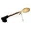

Material Grimoire

RattleSound Magic Tool
Rattles are shaken percussion instruments used to raise positive energy and disperse negative vibrations. The sharp, staccato sound of a rattle cuts through stagnant energy and commands attention from both physical and spiritual realms.
Shamanic Traditions
Rattles are essential shamanic tools found in traditions worldwide. In many Native American traditions, rattles are used to call spirits, heal the sick, and accompany sacred songs. The sistrum, an ancient Egyptian rattle sacred to Hathor and Isis, demonstrates the antiquity of this magical tool.
Materials and Construction
Traditional rattles are made from:
- Gourds filled with seeds or small stones
- Rawhide stretched over frames
- Turtle shells
- Woven containers with pebbles
- Modern rattles may use wood, metal, or synthetic materials
The Asson (Voudon)
For practitioners of Voudon, the asson is a sacred rattle made from a large dried-out gourd with seeds inside, covered with beads and snake bones. It is used in important rites and ceremonies and is itself a symbol of the authority of the Houngan, the Voudon priest considered the Chief of the Spirits. The asson is the equivalent of the scepter and is larger than the musical instrument called the cha cha, although they share a similar appearance.
Ritual Uses
Rattles are used to:
- Clear negative energy from spaces and people
- Call spirits and ancestors
- Accompany chanting and singing
- Mark rhythm during ritual
- Disperse bad vibes and stagnant energy
- Signal transitions in ceremony